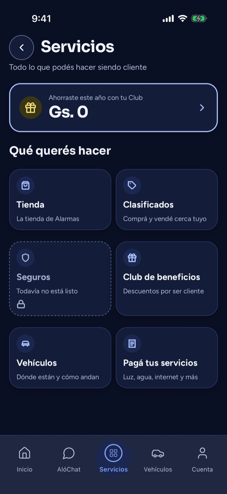
Paso 1
Entrar desde la pestaña Servicios
Clasificados es una de las seis baldosas de la pestaña Servicios, junto a Tienda, Seguros, Club de beneficios, Vehículos y Pagá tus servicios. Dice «Comprá y vendé cerca tuyo».
Cómo usa Clasificados una persona real dentro de la app: mirar avisos, buscar, filtrar, guardar, contactar y armar un aviso para vender. Todas las imágenes son capturas de la app corriendo en un simulador de iPhone, con avisos de muestra.
Clasificados es el lugar de la app donde un cliente de Alarmas Py mira los vehículos que publican otros clientes (autos, motos, camiones, camionetas y otros) o publica el suyo. Está dentro de la misma app que ya usan para el GPS y la alarma, así que no hace falta registrarse en otro lado.
La idea es que comprar y vender entre clientes tenga algo de confianza: cada aviso dice desde cuándo es cliente quien vende, aclara qué mide Alarmas Py y qué no mide, y el contacto pasa por Atención al Cliente en lugar de repartir teléfonos privados.
Alarmas Py no cobra ni guarda la plata de la venta: lo dice la propia app. Cada trato se arregla entre las dos personas.
Para entrar hay que tener cuenta en la app: los avisos los ven y los publican clientes de Alarmas Py.
Cada aviso muestra «Cliente de Alarmas Py desde» el año en que quien vende se hizo cliente.
El aviso no muestra el teléfono ni el correo del vendedor. Para consultar, la app lleva a llamar a Atención al Cliente (021 728 9120) y pide dictarle el número del aviso, un identificador largo. El horario figura como «a confirmar».
Alarmas Py certifica los kilómetros recorridos desde que instaló el equipo, no el odómetro ni el kilometraje total. Hoy ningún aviso de este recorrido puede traer ese sello: los kilómetros que se ven los declara quien vende, y la app lo dice en cada aviso.
Desde dónde se llega y qué ve la persona la primera vez.

Paso 1
Clasificados es una de las seis baldosas de la pestaña Servicios, junto a Tienda, Seguros, Club de beneficios, Vehículos y Pagá tus servicios. Dice «Comprá y vendé cerca tuyo».
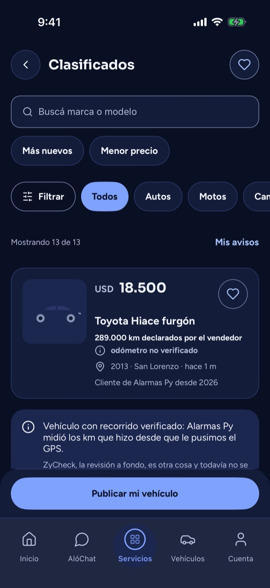
Paso 2
Lo primero que se ve es la lista de avisos con un buscador arriba, dos formas de ordenar, el botón Filtrar y los tipos de vehículo. Abajo queda fijo el botón «Publicar mi vehículo».
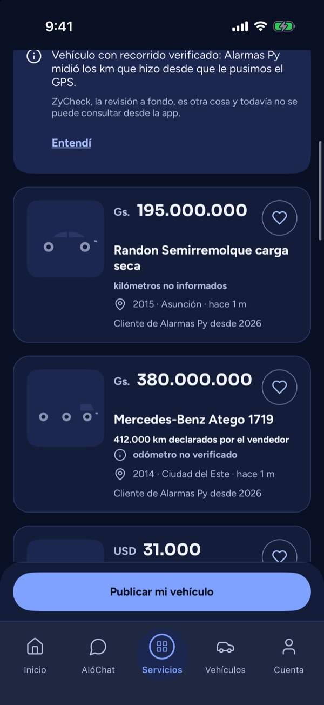
Paso 3
Debajo del primer aviso aparece una explicación de cómo se mide el recorrido: Alarmas Py mide los kilómetros que hizo un vehículo desde que se le puso el GPS. Aclara que ZyCheck, la revisión a fondo, es otra cosa y todavía no se puede consultar desde la app.
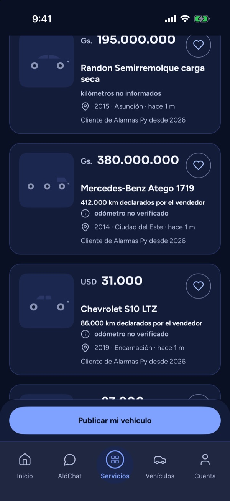
Paso 4
Al tocar «Entendí» la tarjeta desaparece y la lista de avisos sigue sin interrupciones.
La vidriera y todo lo que ayuda a encontrar un vehículo.
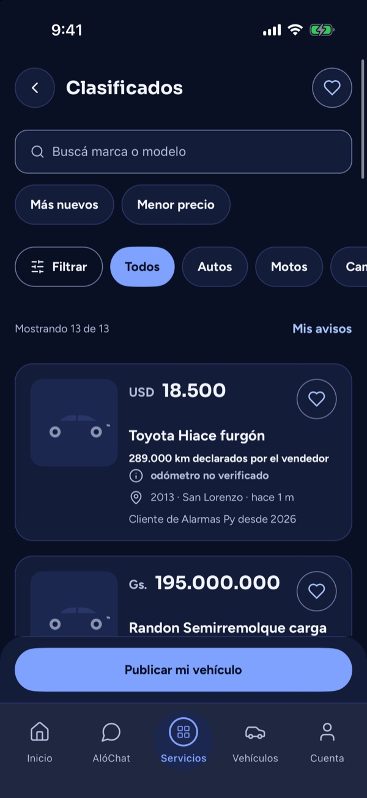
Paso 5
Se ve el precio (en guaraníes, «Gs.», o en dólares, «USD»), el nombre del vehículo, los kilómetros, el año, la ciudad, cuánto hace que se publicó y desde cuándo es cliente de Alarmas Py quien vende.
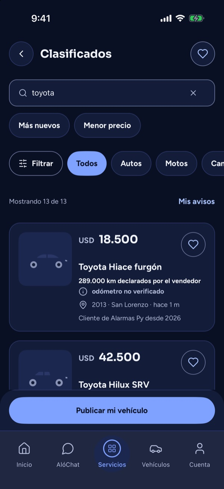
Paso 6 Escribe en el buscador
Escribir «toyota» en el buscador deja en la lista los avisos que lo nombran, como la Hiace y la Hilux.
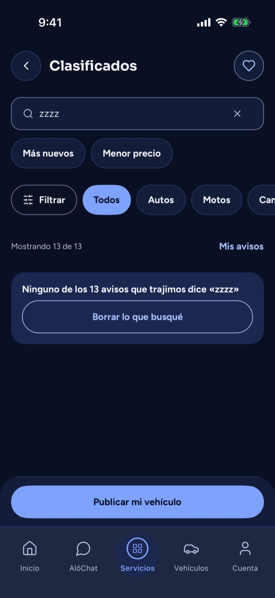
Paso 7
La app lo dice con claridad: «Ninguno de los 13 avisos que trajimos dice «zzzz»», y ofrece «Borrar lo que busqué».
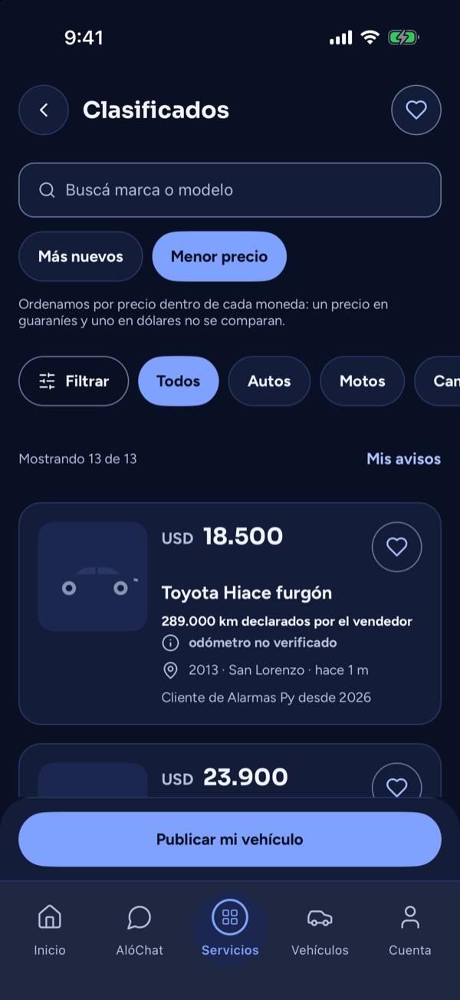
Paso 8
«Menor precio» ordena de lo más barato a lo más caro. La app avisa que ordena dentro de cada moneda: un precio en guaraníes y uno en dólares no se comparan.
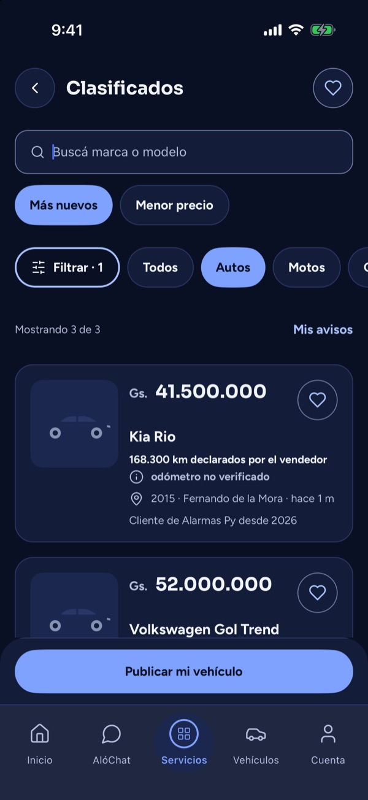
Paso 9
Tocar «Autos» deja sólo los autos: acá hay 3 y el contador dice «Mostrando 3 de 3». El botón Filtrar pasa a «Filtrar · 1».
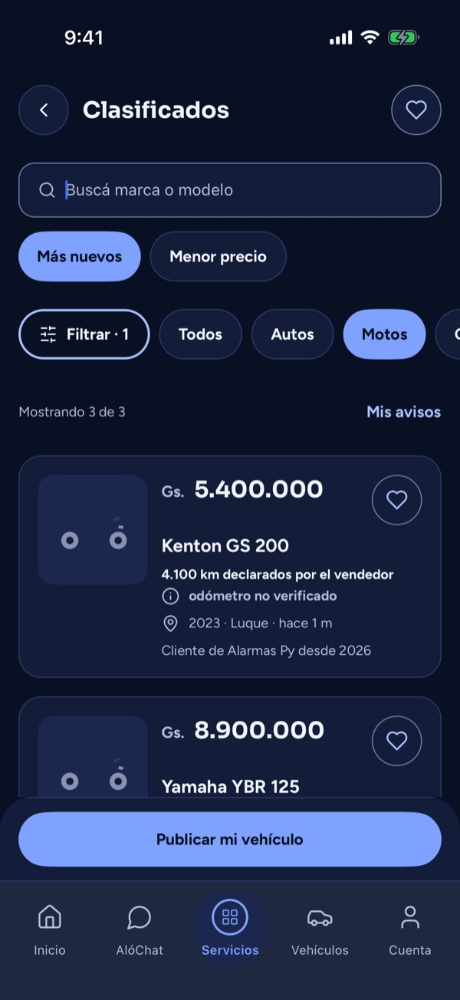
Paso 10
Con «Motos» quedan 3 avisos, entre ellos una Kenton GS 200 y una Yamaha YBR 125.
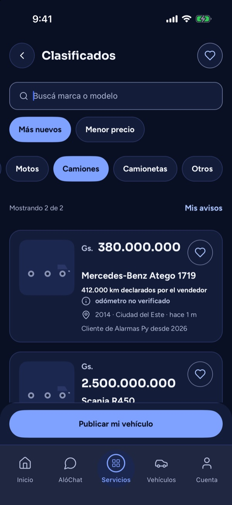
Paso 11
Con «Camiones» quedan 2 avisos, como el Mercedes-Benz Atego 1719.
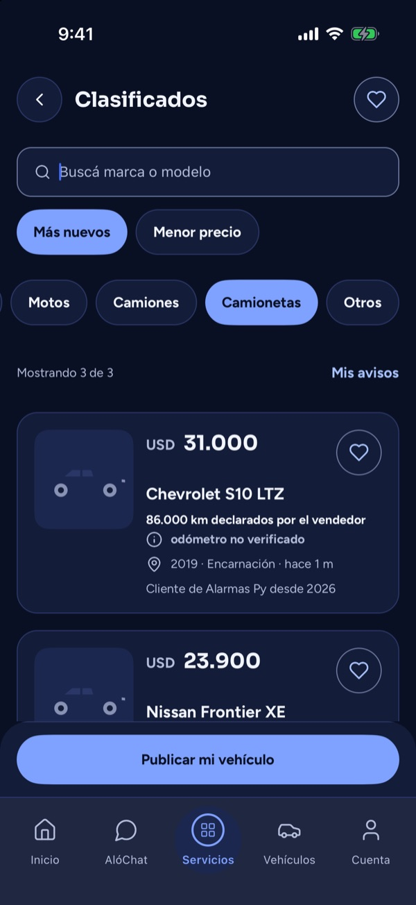
Paso 12
Con «Camionetas» quedan 3 avisos, como la Chevrolet S10 LTZ.
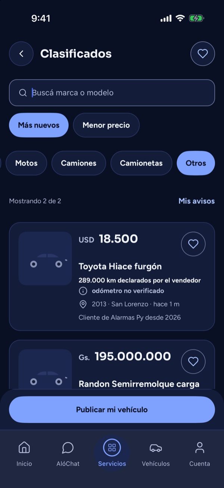
Paso 13
«Otros» junta lo que no es auto, moto, camión ni camioneta: acá, una furgoneta y un semirremolque.
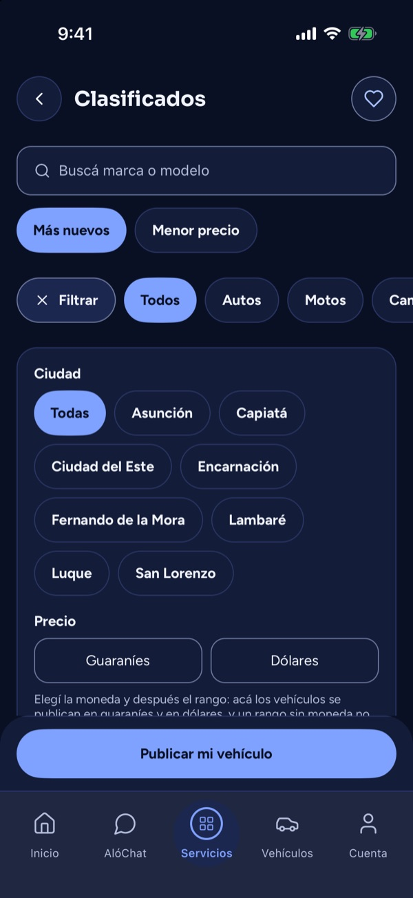
Paso 14
«Filtrar» abre un panel con la ciudad y el precio. Las ciudades salen de los avisos que hay (en este ambiente: Asunción, Capiatá, Ciudad del Este, Encarnación, Fernando de la Mora, Lambaré, Luque y San Lorenzo) y el precio se elige en guaraníes o en dólares.
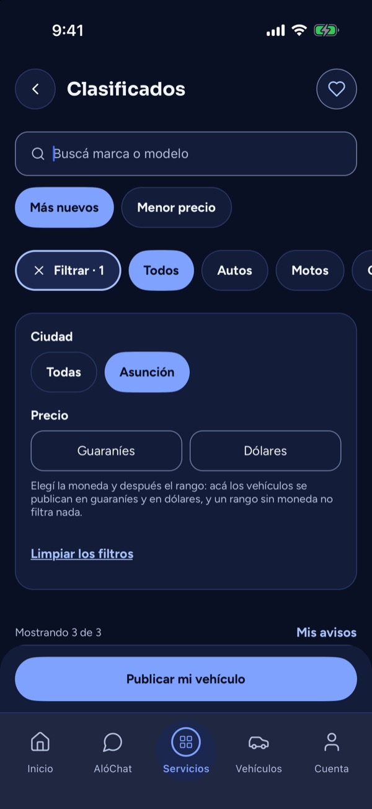
Paso 15
Elegir «Asunción» deja los avisos de esa ciudad (3 en este caso). El botón pasa a «Filtrar · 1» y aparece «Limpiar los filtros».
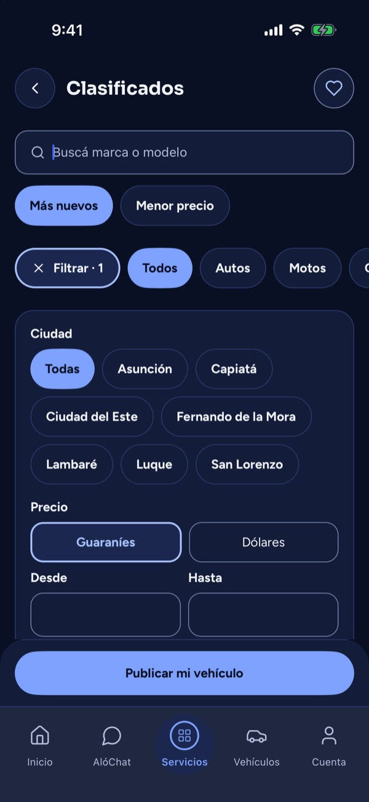
Paso 16
Al tocar «Guaraníes» aparecen los campos «Desde» y «Hasta» para poner el rango.
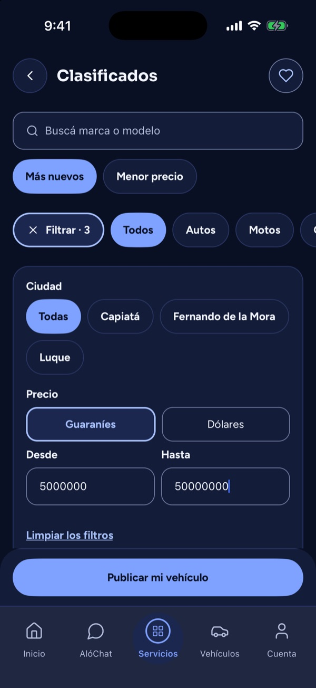
Paso 17 Escribe el rango
Se escribe un precio mínimo y un máximo, en este caso de 5.000.000 a 50.000.000 de guaraníes. El botón ya dice «Filtrar · 3».
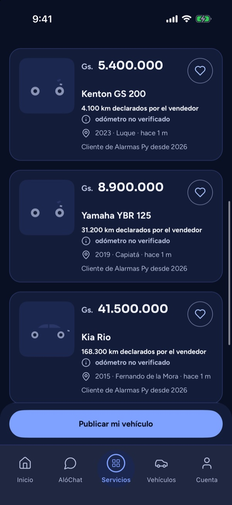
Paso 18
Quedan los avisos dentro del rango: una Kenton GS 200 (Gs. 5.400.000), una Yamaha YBR 125 (Gs. 8.900.000) y un Kia Rio (Gs. 41.500.000).
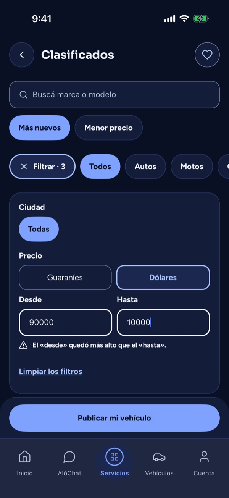
Paso 19 Escribe el rango
Con «Desde 90000» y «Hasta 10000» la app avisa en el mismo campo: «El «desde» quedó más alto que el «hasta»».
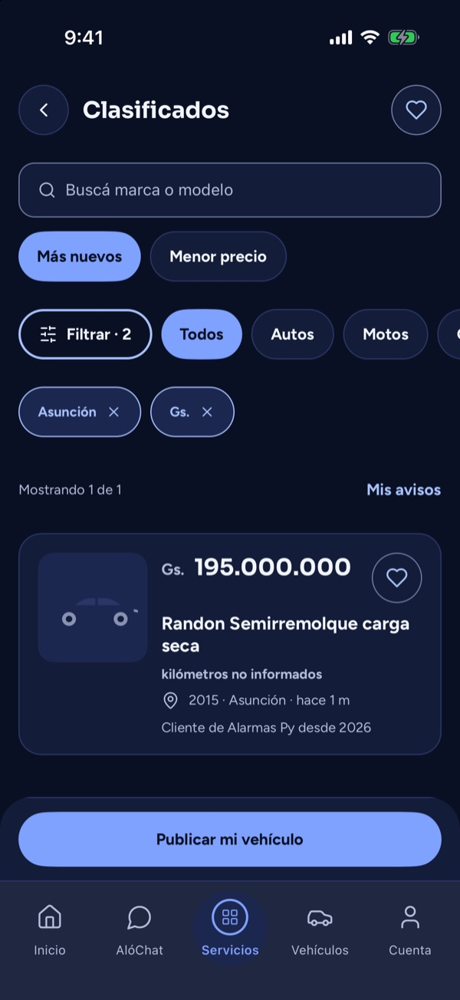
Paso 20
Con el panel cerrado, cada filtro activo queda como una etiqueta que se quita con la ×: acá «Asunción» y «Gs.». El contador baja a «Mostrando 1 de 1».
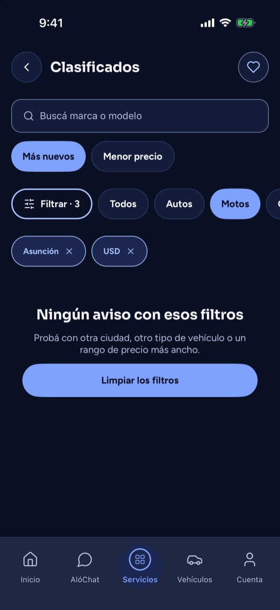
Paso 21
Con Motos, Asunción y dólares no hay nada, y la app lo dice: «Ningún aviso con esos filtros. Probá con otra ciudad, otro tipo de vehículo o un rango de precio más ancho.» Con un botón para limpiar los filtros.
Qué cuenta cada aviso y qué se puede hacer desde él.
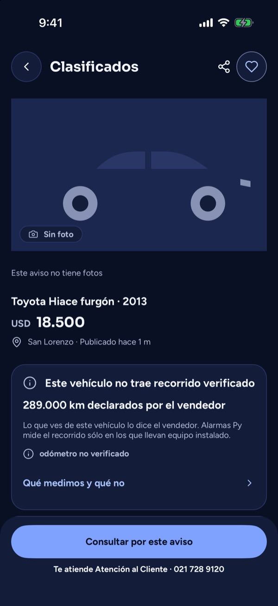
Paso 22
El detalle muestra la foto, el modelo y el año, el precio, la ciudad y cuándo se publicó. Arriba hay dos botones: compartir y guardar con el corazón. Abajo, fijo, «Consultar por este aviso» con el teléfono de Atención al Cliente.
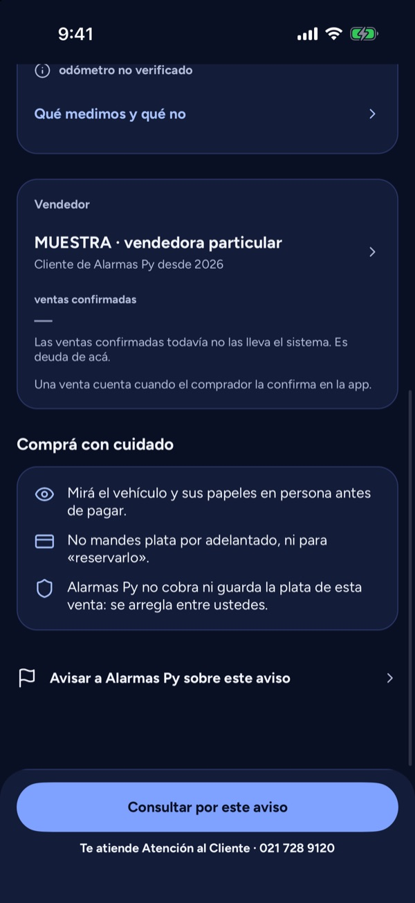
Paso 23
Más abajo, la ficha del vendedor muestra su nombre y desde cuándo es cliente de Alarmas Py. Después, «Comprá con cuidado» con tres consejos: mirá el vehículo y sus papeles en persona, no mandes plata por adelantado y recordá que Alarmas Py no cobra ni guarda la plata de la venta.
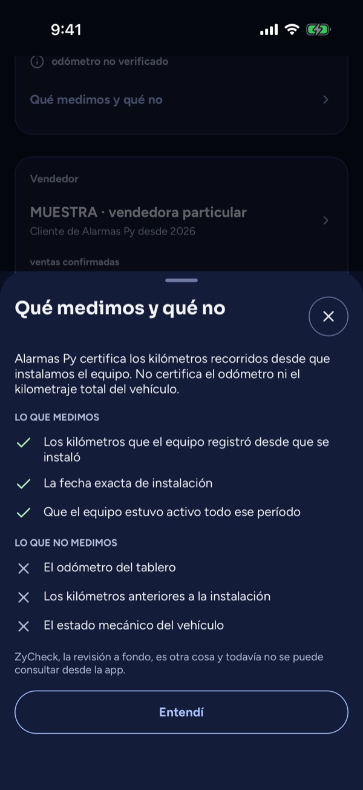
Paso 24
«Qué medimos y qué no» abre una hoja. Mide los kilómetros que el equipo registró desde que se instaló, la fecha de instalación y que el equipo estuvo activo. No mide el odómetro del tablero, los kilómetros anteriores a la instalación ni el estado mecánico.
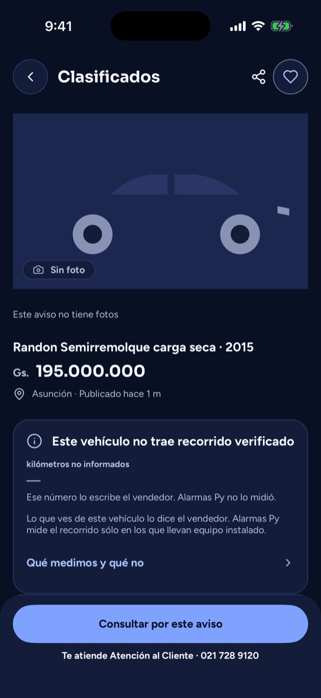
Paso 25
Si quien vende no puso los kilómetros, el detalle dice «kilómetros no informados» y explica: ese número lo escribe el vendedor y Alarmas Py no lo midió.
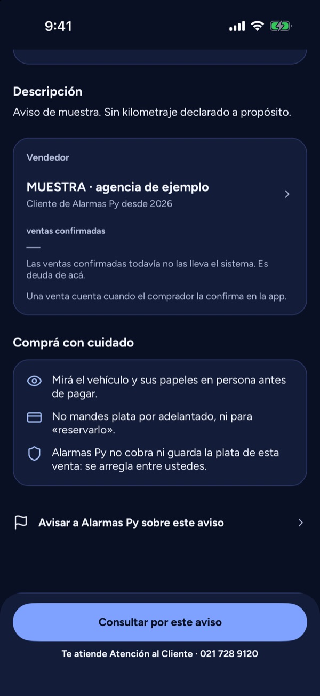
Paso 26
Algunos avisos traen una descripción escrita por quien vende, debajo de los datos del vehículo y antes de la ficha del vendedor. Éste es de otro vendedor de muestra, «MUESTRA · agencia de ejemplo».
Cómo se comunica un comprador y cómo se denuncia algo raro.
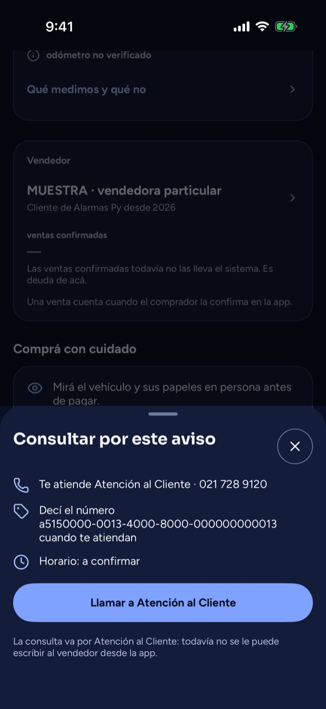
Paso 27 Contactar
«Consultar por este aviso» abre una hoja: se contacta con Atención al Cliente (021 728 9120), se le dicta el número del aviso y un botón «Llamar a Atención al Cliente» arma la llamada. No hay chat con el vendedor: la hoja lo aclara.
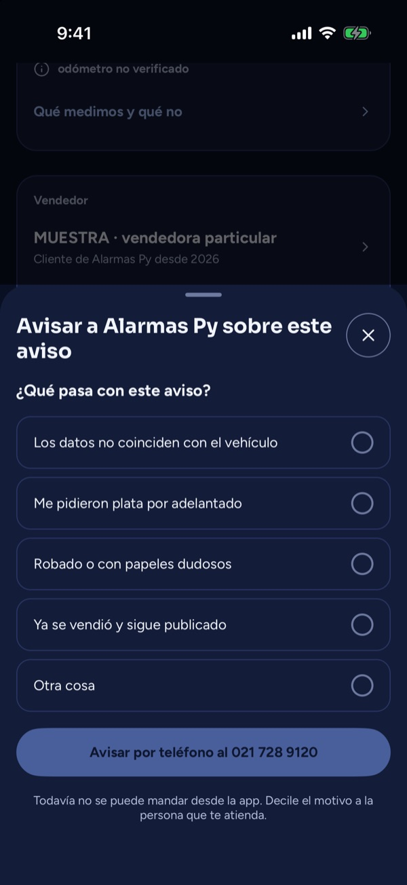
Paso 28
«Avisar a Alarmas Py sobre este aviso» ofrece cinco motivos: los datos no coinciden con el vehículo, me pidieron plata por adelantado, robado o con papeles dudosos, ya se vendió y sigue publicado, u otra cosa.
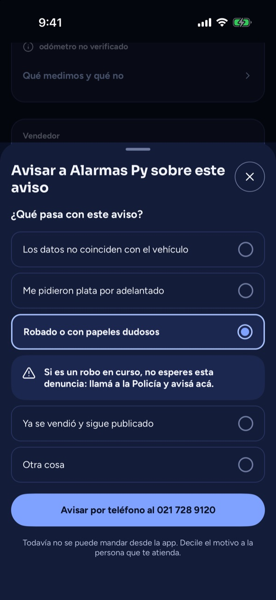
Paso 29 Elige un motivo
Al elegir «Robado o con papeles dudosos» aparece una advertencia: si es un robo en curso, no hay que esperar esta denuncia sino llamar a la Policía y avisar acá.
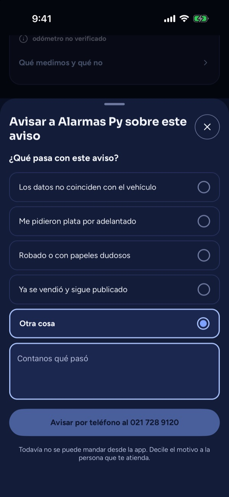
Paso 30 Elige un motivo
Con «Otra cosa» se abre un cuadro de texto: «Contanos qué pasó».
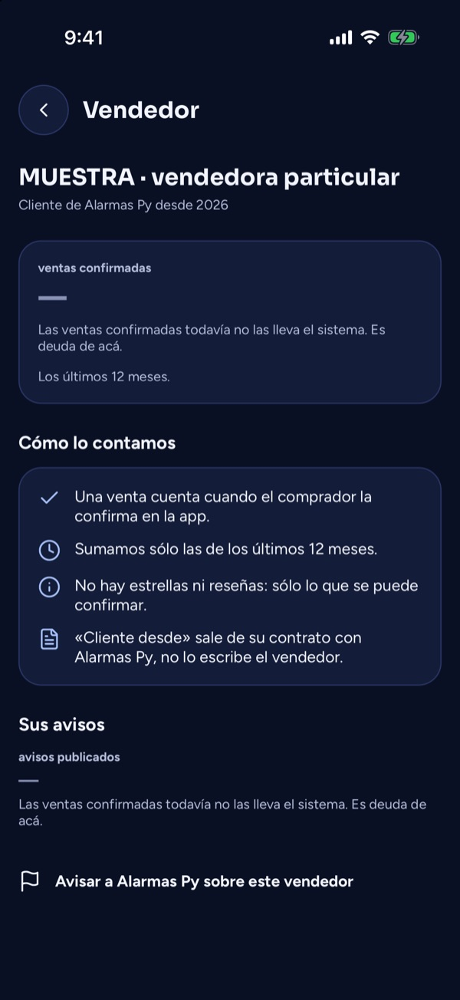
Paso 31
Tocar la ficha del vendedor abre su perfil: nombre y desde cuándo es cliente, más dos contadores, «ventas confirmadas» y «avisos publicados», que hoy salen en blanco (—) porque el sistema todavía no los lleva: la propia pantalla lo dice. «Cómo lo contamos» explica las reglas y también permite «Avisar a Alarmas Py sobre este vendedor».
Dejar avisos para más tarde y mandarlos a otra persona.
Paso 32
El corazón de la esquina abre Guardados. Sin avisos guardados dice «Todavía no guardaste nada» y ofrece «Seguir mirando».
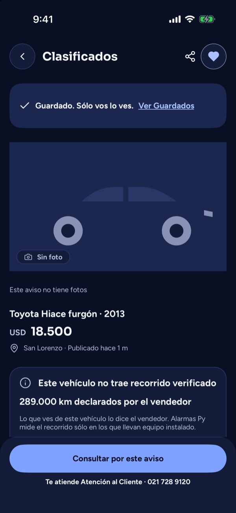
Paso 33 Guarda en el teléfono
Tocar el corazón guarda el aviso y lo confirma con un cartel: «Guardado. Sólo vos lo ves.», con un acceso directo a Guardados.
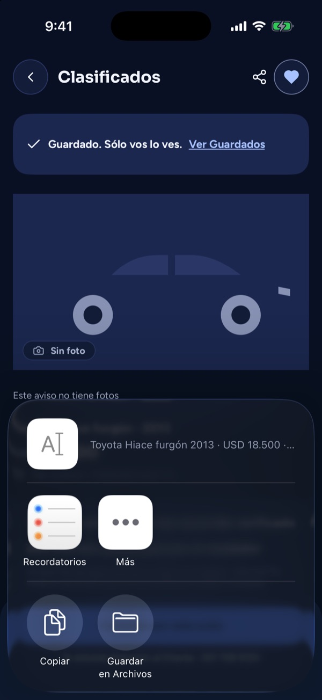
Paso 34
El botón de compartir abre la hoja del teléfono con un texto ya armado (por ejemplo «Toyota Hiace furgón 2013 · USD 18.500 · …»). Se puede mandar por cualquiera de las aplicaciones que ofrece el teléfono.
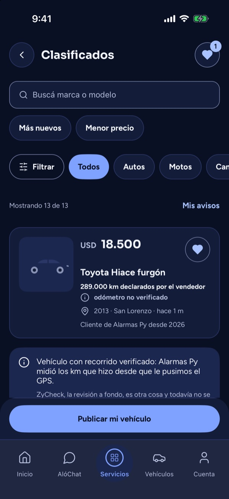
Paso 35
Con un aviso guardado, el corazón de la esquina muestra un «1» y la tarjeta queda con el corazón lleno.
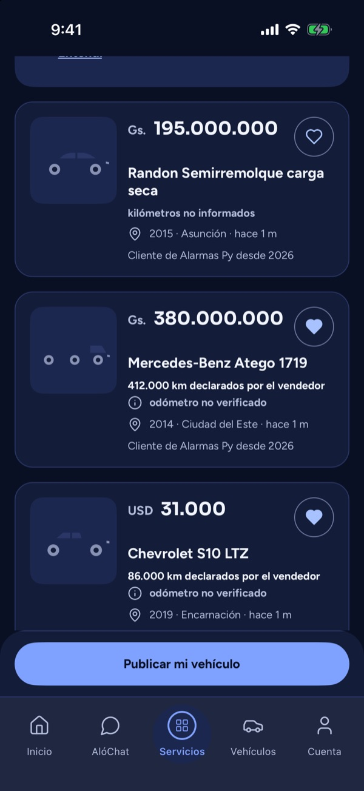
Paso 36 Guarda en el teléfono
Cada corazón lleno es un aviso guardado. Acá hay tres guardados: la Hiace (arriba, fuera de cuadro), el Atego y la S10.
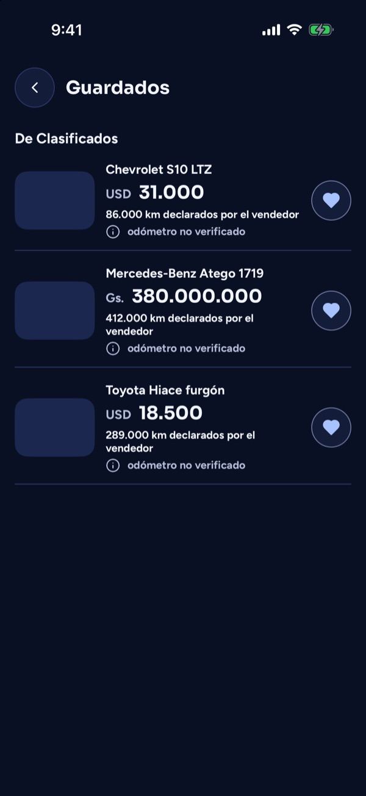
Paso 37
Guardados reúne todo lo guardado bajo «De Clasificados», con el precio, los kilómetros declarados y el corazón para quitarlo.
El camino del vendedor, campo por campo.
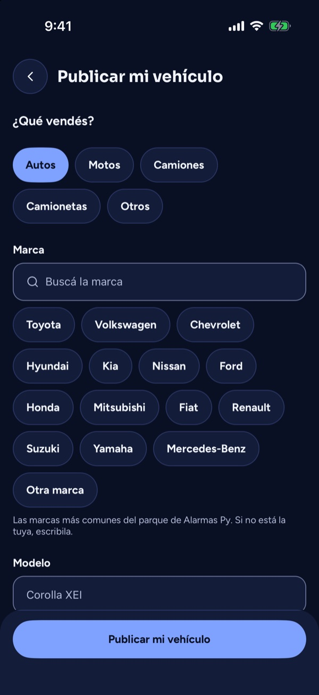
Paso 38
«Publicar mi vehículo» abre un formulario guiado. Empieza con «¿Qué vendés?» (autos, motos, camiones, camionetas u otros), sigue con la marca (un buscador y las marcas más comunes del parque de Alarmas Py) y el modelo, que muestra un ejemplo («Corolla XEI»).
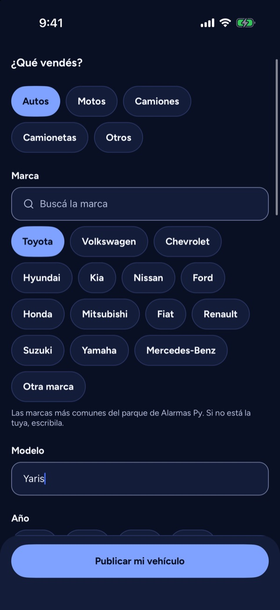
Paso 39 Escribe en el formulario
Se toca la marca (acá, Toyota) y se escribe el modelo (acá, Yaris).
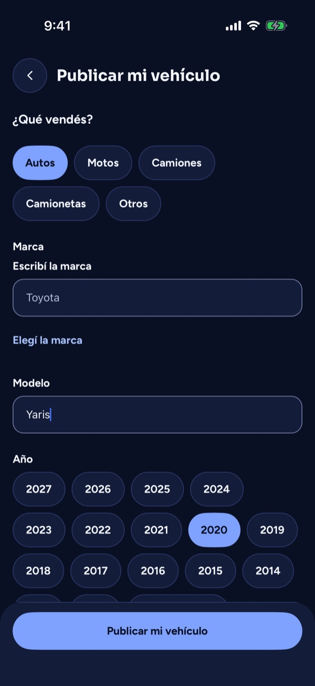
Paso 40
Con «Otra marca» aparece un campo para escribirla. «Elegí la marca» vuelve a la lista.
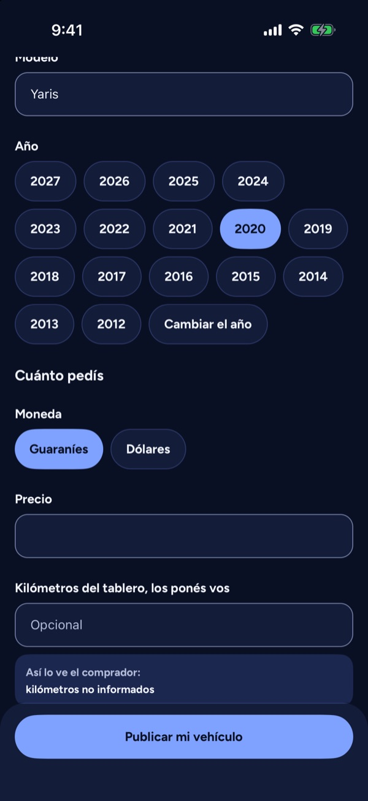
Paso 41 Escribe en el formulario
El año se elige entre 2012 y 2027, la moneda es guaraníes o dólares, el precio se escribe en números enteros y los kilómetros del tablero son opcionales. Debajo, «Así lo ve el comprador» muestra cómo se leerán los kilómetros.
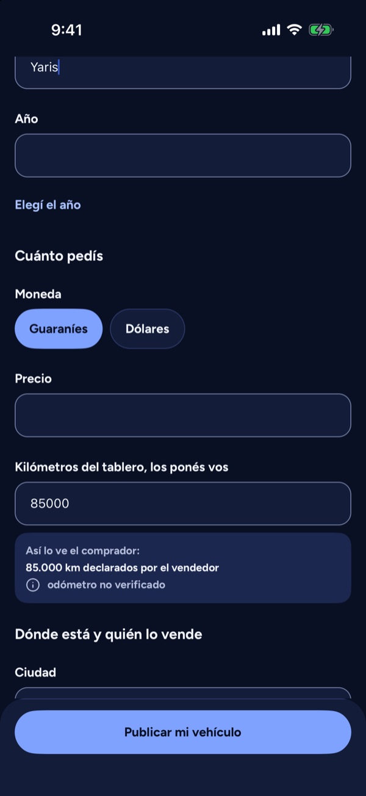
Paso 42
«Cambiar el año» muestra un campo para escribir cualquier otro año.
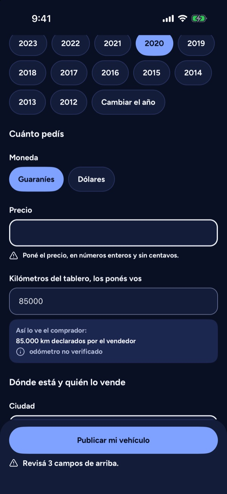
Paso 43 Escribe en el formulario
Al escribir 85000 en kilómetros, la vista previa dice «85.000 km declarados por el vendedor» y «odómetro no verificado»: así se le muestra a quien mira el aviso.
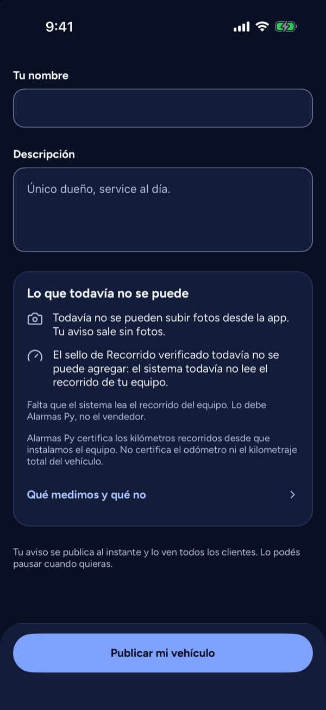
Paso 44
Al final se pide la ciudad, el nombre de quien vende y una descripción libre. El cuadro «Lo que todavía no se puede» avisa que no se pueden subir fotos desde la app y que el sello de «Recorrido verificado» tampoco se puede agregar todavía.
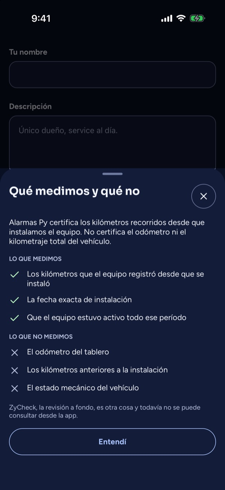
Paso 45
Desde el formulario se abre la misma hoja que en el detalle, para que quien vende sepa qué certifica Alarmas Py y qué no.
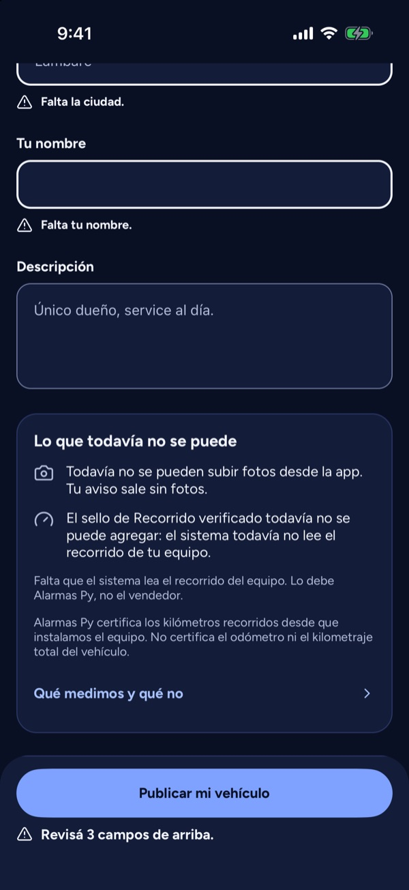
Paso 46
Al tocar «Publicar mi vehículo» sin completar todo, la app marca cada campo («Falta la ciudad.», «Falta tu nombre.») y cuenta cuántos hay que revisar: «Revisá 3 campos de arriba.»
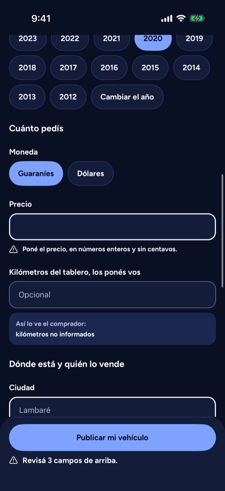
Paso 47
El precio también se marca: «Poné el precio, en números enteros y sin centavos.»
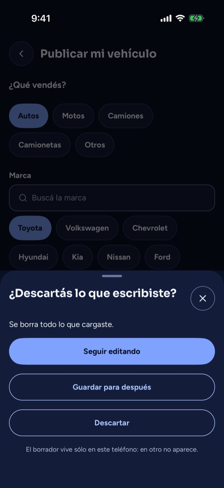
Paso 48
Al volver atrás con datos cargados, la app pregunta «¿Descartás lo que escribiste?» con tres opciones: «Seguir editando», «Guardar para después» o «Descartar». Aclara que el borrador vive sólo en ese teléfono.
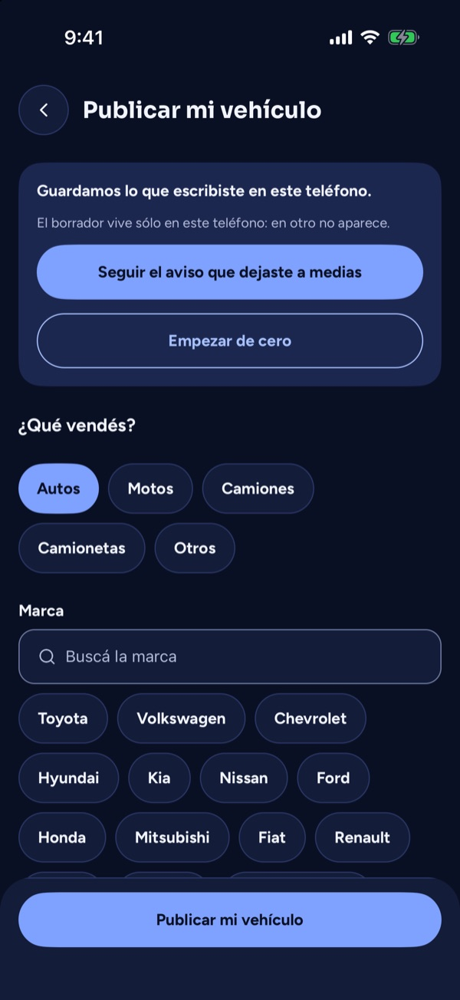
Paso 49
Si se guardó para después, al abrir Publicar de nuevo la app avisa «Guardamos lo que escribiste en este teléfono» y ofrece «Seguir el aviso que dejaste a medias» o «Empezar de cero».
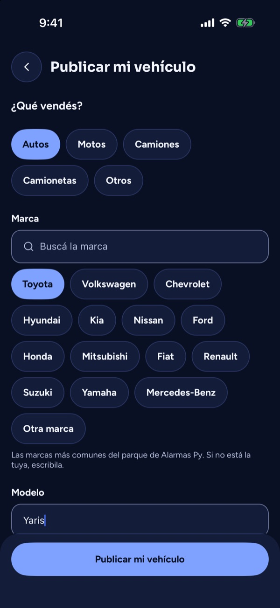
Paso 50
Al seguir el aviso, el formulario vuelve con lo que se había cargado: el tipo de vehículo, la marca Toyota y el modelo.
Administrar lo que ya se publicó.
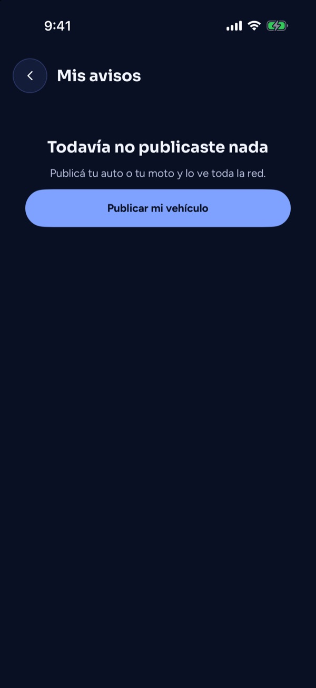
Paso 51
Desde «Mis avisos» se ve lo que la persona publicó. Si todavía no publicó nada dice «Todavía no publicaste nada» y «Publicá tu auto o tu moto y lo ve toda la red», con el botón para publicar.
Qué dice la app si no hay internet, si falla el servidor o no hay nada que mostrar.
Paso 52
Cuando la lista no se puede traer, la app lo dice sin tecnicismos: «No pudimos traer los avisos. Probá de nuevo.» y ofrece «Probar de nuevo» y «Hablar con una persona». Acá se provocó con un precio «desde» más alto que el «hasta» (90000 contra 10000): en vez de reordenar el rango, la pantalla muestra este error.
La app se puede usar en español, inglés y portugués.
Paso 53
Cambiando el idioma en Cuenta → Ajustes → Idioma, la vidriera se lee en inglés: «Classifieds», «Search make or model», «Newest», «Lowest price», «Post My Vehicle».
Paso 54
Y en portugués: «Classificados», «Busca marca ou modelo», «Mais novos», «Menor preço», «Publicar o meu veículo».
Este recorrido muestra lo que la app hace hoy. Lo siguiente no aparece en pantalla porque todavía no existe en esta versión o no se puede mostrar con datos reales.
| Qué | Por qué no está en este recorrido |
|---|---|
| Publicar un aviso de verdad, verlo en «Mis avisos», pausarlo y volver a publicarlo | Publicar es inmediato y lo ven todos los clientes, y la app no permite borrar un aviso (sólo pausarlo). Por eso no se publicó ningún aviso de prueba. |
| Llamar a Atención al Cliente desde «Consultar» o «Avisar» | Los botones arman una llamada real, así que no se tocaron. |
| Subir fotos al publicar | El formulario avisa que todavía no se pueden subir fotos desde la app. |
| Galería con varias fotos | El detalle muestra una sola foto por aviso, y los avisos de este recorrido no tienen ninguna. |
| Sello «Recorrido verificado» | Está diseñado, pero hoy ningún aviso puede llevarlo: el servidor todavía no lee el recorrido del GPS. |
| ZyCheck (inspección a fondo del vehículo) | Es un producto por construir. La app sólo dice que todavía no se puede consultar. |
| Marcar un aviso como vendido | Sólo está diseñado. Hoy se puede pausar y volver a publicar. |
| Editar, renovar, ver estadísticas o borrar un aviso desde la app | No existen en esta versión. |
| Chat o mensaje directo al vendedor | El contacto pasa por llamar a Atención al Cliente; el aviso no trae teléfono ni correo del vendedor. |
| Alertas de avisos nuevos, búsquedas guardadas, avisos parecidos | No existen en esta versión. |
| Pantalla de carga, sin conexión, error de permisos y error real del servidor | No se pudieron provocar con seguridad en el simulador. |
| Tope de 100 avisos y carga de a tandas | Sólo se ve con más avisos publicados: en este ambiente hay 13. |
| Vidriera sin ningún aviso y «No trajimos más» | Existen en el código de la app, pero este ambiente tiene 13 avisos y no se pudieron provocar. |
| Detalle de un aviso que ya no existe | Existe en el código («No pudimos traer este aviso»); no se provocó. |
| Error al publicar y ciudad o nombre de un solo carácter | Se ven sólo al enviar de verdad: la app acepta un carácter y el servidor puede rechazarlo. No se envió nada. |
| «Ya llamaste hace…» y «Volver a llamar» en un aviso consultado | Aparecen después de llamar, y no se llamó. |
| Mis avisos con avisos propios: «Estado sin confirmar», Pausar y Volver a publicar | Sólo se ven con un aviso publicado, y no se publicó ninguno. |
| Ref. | Función | Dónde |
|---|---|---|
| F01 | Entrar desde Servicios | paso 1 |
| F02 | Vidriera con tarjetas de avisos | paso 2, paso 5 |
| F03 | Tarjeta que explica el sello de recorrido y «Entendí» | paso 3, paso 4 |
| F04 | Buscador por marca o modelo y sin coincidencias | paso 6, paso 7 |
| F05 | Orden por menor precio | paso 8 |
| F06 | Filtro por tipo de vehículo | paso 9, paso 10, paso 11, paso 12, paso 13 |
| F07 | Panel de filtros: ciudad, moneda y rango de precio | paso 14, paso 15, paso 16, paso 17, paso 18, paso 19 |
| F08 | Etiquetas de filtros activos y «Limpiar los filtros» | paso 20, paso 21 |
| F09 | Detalle del aviso, con y sin kilómetros, con y sin descripción | paso 22, paso 25, paso 26 |
| F10 | Ficha del vendedor y «Comprá con cuidado» | paso 23 |
| F11 | Qué medimos y qué no | paso 24, paso 45 |
| F12 | Consultar por un aviso (Atención al Cliente) | paso 27 |
| F13 | Avisar a Alarmas Py: cinco motivos y advertencia de robo | paso 28, paso 29, paso 30 |
| F14 | Perfil del vendedor | paso 31 |
| F15 | Guardar con el corazón, contador y Guardados | paso 33, paso 35, paso 36, paso 37, paso 32 |
| F16 | Compartir un aviso | paso 34 |
| F17 | Formulario de publicar: tipo, marca, modelo, año, moneda, precio y kilómetros | paso 38, paso 39, paso 40, paso 41, paso 42, paso 43 |
| F18 | Formulario de publicar: ciudad, nombre, descripción y límites actuales | paso 44 |
| F19 | Validación del formulario | paso 46, paso 47 |
| F20 | Borrador: descartar, guardar y recuperar | paso 48, paso 49, paso 50 |
| F21 | Mis avisos | paso 51 |
| F22 | Error al traer los avisos | paso 52 |
| F23 | Idiomas inglés y portugués | paso 53, paso 54 |